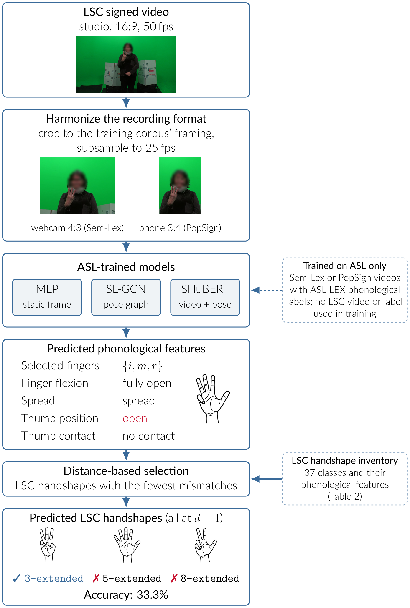
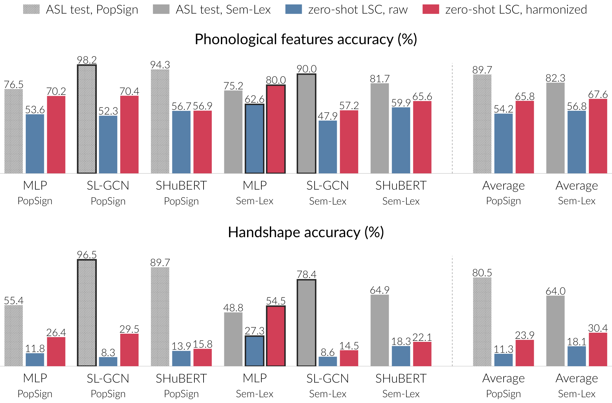
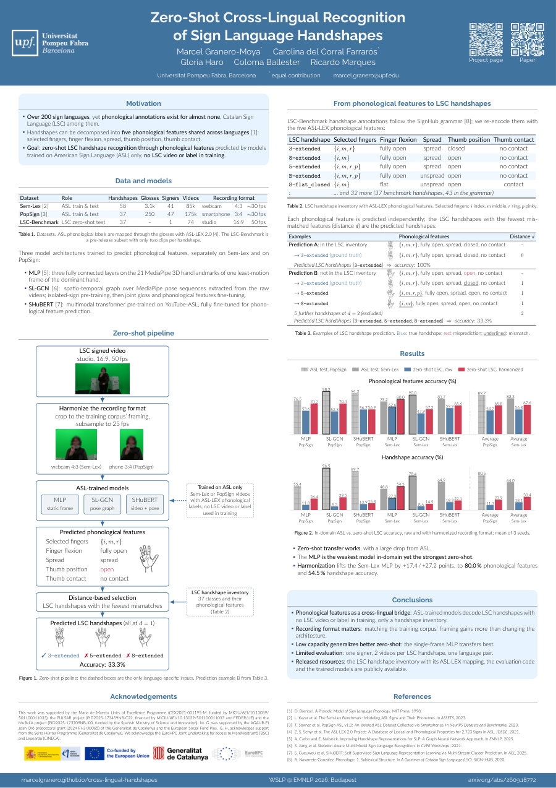

Sign language processing advances rapidly for high-resource languages such as American Sign Language (ASL), yet most of the world's sign languages lack the phonological annotations new methods require. We present the first zero-shot cross-lingual framework for handshape recognition, transferring from ASL to Catalan Sign Language (LSC). Our approach leverages the decomposition of handshapes into five phonological features — selected fingers, flexion, spread, thumb position, and thumb contact — shared across both languages, to decode LSC handshapes from predicted features via a composite phonological distance metric. We evaluate three architectures (MLP, SL-GCN, SHuBERT) trained on two ASL corpora (PopSign, Sem-Lex) against a 37-handshape, single-signer LSC benchmark. Zero-shot transfer proves viable once recording-format disparities are harmonized, reaching 80.0% phonological feature accuracy and 54.5% expected handshape accuracy. Phonological decomposition thus offers a bridge for extending sign language technologies to low-resource languages without any target-language video training labels.
Handshapes can be decomposed into five phonological features shared across languages: selected fingers, finger flexion, spread, thumb position and thumb contact. Three architectures (MLP, SL-GCN, SHuBERT) learn to predict these features from American Sign Language (ASL) videos only. An LSC video is first cropped and subsampled to the recording format of the training corpus; the LSC handshapes whose phonological features have the fewest mismatches with the prediction are then selected, so no LSC video or label is needed in training.



Please cite the WSLP @ EMNLP 2026 workshop paper; the arXiv entry is
the same work, recorded below as eprint.
@inproceedings{granero-moya-etal-2026-zero-shot,
title = {Zero-Shot Cross-Lingual Recognition of Sign Language Handshapes},
author = {Granero-Moya, Marcel and del Corral Farrar{\'o}s, Carolina
and Haro, Gloria and Ballester, Coloma and Marques, Ricardo},
booktitle = {Proceedings of the Second Workshop on Sign Language Processing (WSLP)},
month = oct,
year = {2026},
address = {Budapest, Hungary (Co-located with EMNLP 2026)},
publisher = {Association for Computational Linguistics},
eprint = {2609.18772},
archivePrefix = {arXiv},
primaryClass = {cs.CL}
}